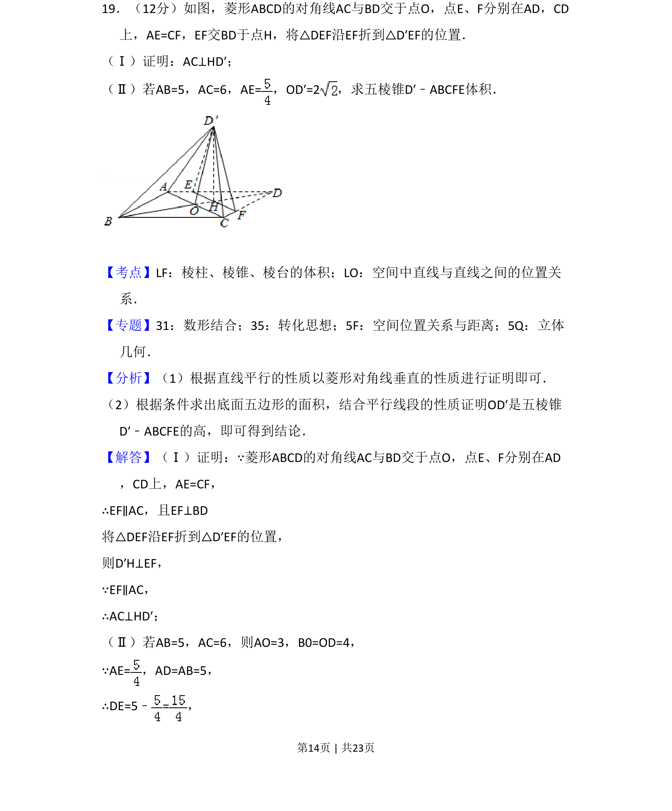
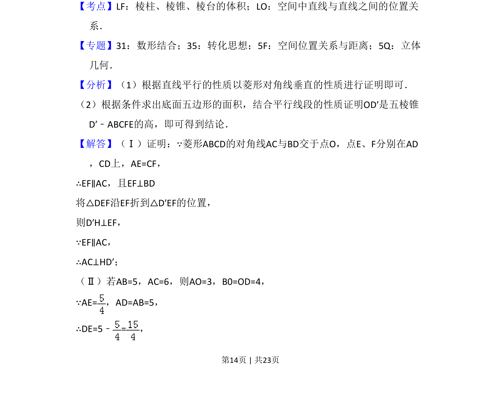
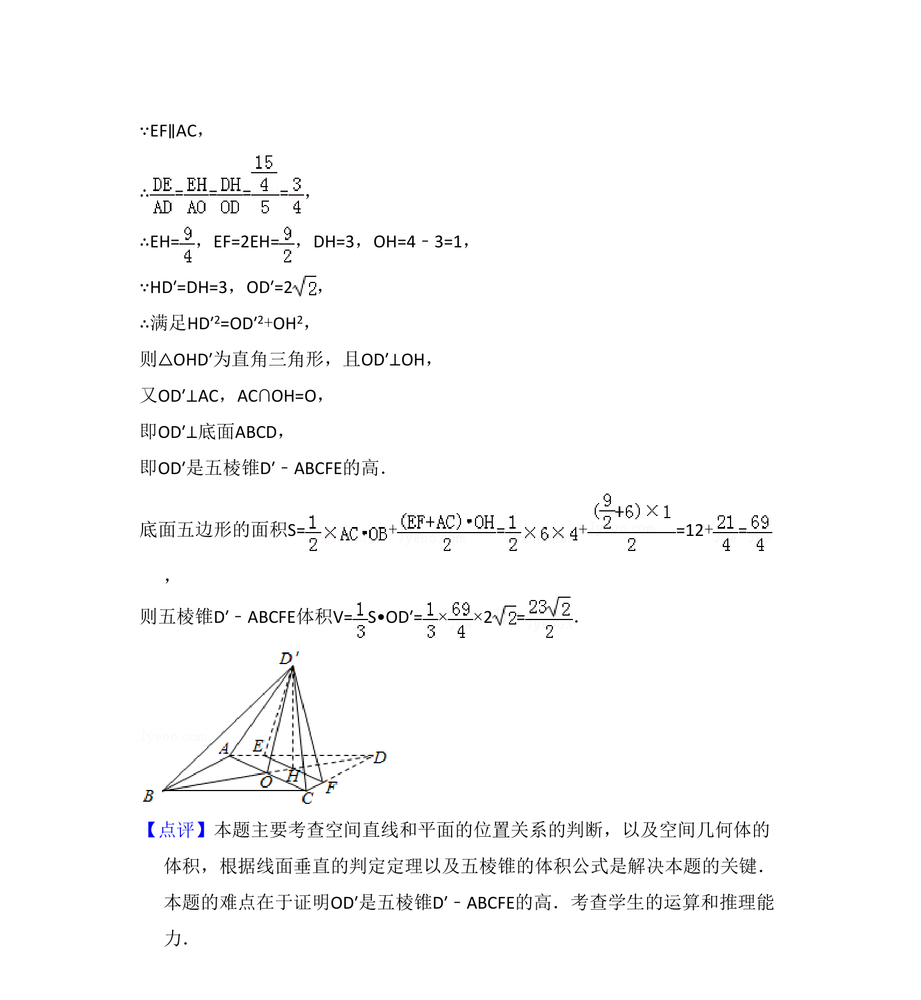

考点：线线垂直 棱锥体积 立体几何

菱形ABCD折叠成立体图形后证明AC⊥HD'（线线垂直），再求五棱锥D'-ABCFE的体积。


📄 原 PDF 第 14 页：
素材/真题/吉林/2008-2024·（吉林）数学高考真题/2016年高考数学试卷（文）（新课标Ⅱ）（解析卷）.pdf
19．（12分）如图，菱形ABCD的对角线AC与BD交于点O，点E、F分别在AD，CD 上，AE=CF，EF交BD于点H，将△DEF沿EF折到△D′EF的位置． （Ⅰ）证明：AC⊥HD′； （Ⅱ）若AB=5，AC=6，AE=，OD′=2，求五棱锥D′﹣ABCFE体积．
【考点】LF：棱柱、棱锥、棱台的体积；LO：空间中直线与直线之间的位置关 系．菁优网版权所有 【专题】31：数形结合；35：转化思想；5F：空间位置关系与距离；5Q：立体 几何． 【分析】（1）根据直线平行的性质以菱形对角线垂直的性质进行证明即可． （2）根据条件求出底面五边形的面积，结合平行线段的性质证明OD′是五棱锥 D′﹣ABCFE的高，即可得到结论． 【解答】（Ⅰ）证明：∵菱形ABCD的对角线AC与BD交于点O，点E、F分别在AD ，CD上，AE=CF， ∴EF∥AC，且EF⊥BD 将△DEF沿EF折到△D′EF的位置， 则D′H⊥EF， ∵EF∥AC， ∴AC⊥HD′； （Ⅱ）若AB=5，AC=6，则AO=3，B0=OD=4， ∵AE=，AD=AB=5， ∴DE=5﹣=，